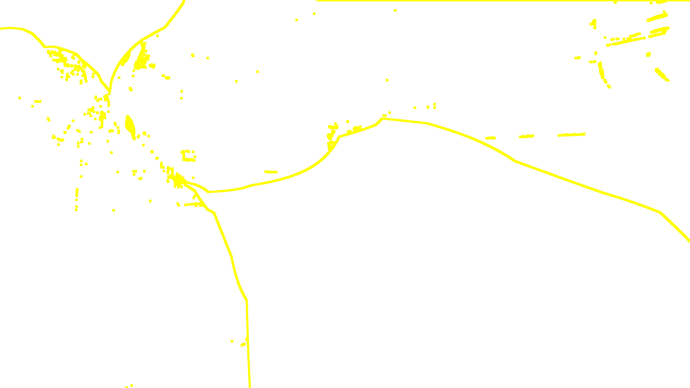
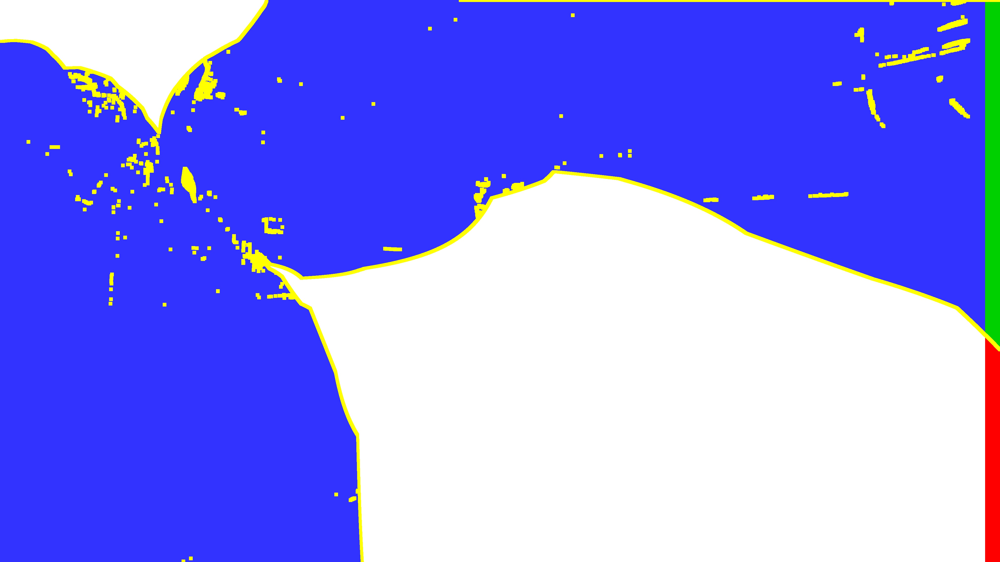

Colorized Reference Mask |

Original System Output Mask |

Binarized Reference Mask (Black = Manipulated, Yellow = Boundary No-Score Zone, Pink = Selective No-Score Zone, Purple = System Opt Out) |

Binarized System Output Mask (Black = Manipulated, Threshold <= 3) |

No-Score Zone (Yellow = Boundary No-Score Zone, Pink = Selective No-Score Zone, Purple = System Opt Out) |

Evaluation Result Visualization |
Optimum Threshold: 3
| Localization Metrics |
Optimum |
| Nimble Mask Metric (NMM) |
-0.979 |
| Matthews Correlation Coefficient (MCC) |
0.006 |
| Binary Weighted L1 Loss (BWL1) |
0.582 |
| Grayscale Weighted L1 Loss (GWL1) | 0.605 |
|---|
|
Total Pixels (N): 8921010
| Confuson Measures |
OptimumPixelCount |
OptimumProportion |
| True Postives (TP: green) |
81652 |
0.009 |
| False Postives (FP: red) |
52519 |
0.006 |
| True Negatives (TN: white) |
3647028 |
0.409 |
| False Negatives (FN: blue) |
5139811 |
0.576 |
|
No-Score Measures
|
Pixels
|
Proportion
|
|
Boundary No-Score Zone (BNS: yellow):
|
223566
|
0.024
|
|
Selective No-Score Zone (SNS: pink):
|
0
|
0.000
|
|
System Opt Out No-Score Zone (PNS: purple):
|
0
|
0.000
|
|
Total No-Score Zone:
|
223566
|
0.024
|
|